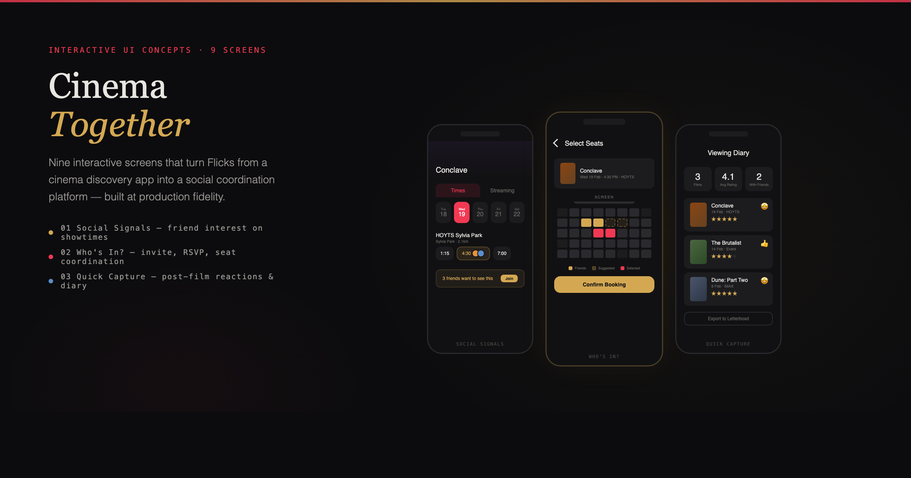

Flicks — Cinema Together
2026Product Design · Systems Strategy · User Research · React Prototype
A product design strategy for Vista Group's Flicks platform — three interconnected features that extend cinema discovery into social coordination, group attendance, and post-viewing reflection. Research-backed, prototyped at production fidelity, and positioned within Vista's B2B cinema ecosystem.

The value isn't in the screen. It's in the ecosystem around it.
The global cinema market is projected to reach $108 billion by 2034. Gen Z attendance grew 25% in the past year. But the growth isn't driven by better projection or bigger screens — it's driven by something more fundamental: people want to be in a room together.
Cinema is no longer competing with streaming on convenience. It's competing on experience. Audiences now use social word-of-mouth as a heuristic not just to decide whether to watch a film, but where to watch it. The films that succeed theatrically are the ones that feel like events worth being present for.
Every step that leads to that moment — discovering a film, deciding to go, coordinating with friends, choosing a session, reflecting on the experience — is an act of social investment. Together these steps form an ecosystem that doesn't just support cinema attendance. It generates it.
A strong foundation with room to grow
Flicks has built something genuinely good. The 2025 Australian Good Design Award jury called it "a really well integrated, well considered solution to a very modern problem." App users engage 8x more frequently than web users. The core product solves two real pain points: "What should I watch?" and "Where can I watch it?"
But Flicks currently ends where the most valuable part of cinema begins. The app helps users discover a film and shows them where it's playing. Then it hands them off — to a cinema's booking site, to a group chat, to whatever ad hoc coordination gets them into a seat. The moment of highest commercial value — the transition from intent to attendance — happens outside the platform.
Where Flicks sits in the journey
No one owns the full journey
Cinema attendance is fundamentally a social coordination problem. A 2025 factorial survey study found that personal recommendation from close friends is the single most significant predictor of cinema attendance, regardless of genre. A separate study of 472 moviegoers found that the direct social utility of going with someone was a better predictor than social media FOMO or social capital.
59% of moviegoers discover films through social media. But social buzz alone doesn't convert to tickets. The conversion happens when someone acts on a friend's recommendation — and that step is where every platform drops the user.
| Platform | Discovery | Showtimes | Ticketing | Social | Post-film |
|---|---|---|---|---|---|
| Fandango | ◐ | ● | ● | ○ | ○ |
| Atom Tickets | ◐ | ● | ● | ◐ | ○ |
| Letterboxd | ● | ◐ | ○ | ● | ● |
| JustWatch | ● | ○ | ○ | ○ | ○ |
| IMDb | ● | ◐ | ○ | ○ | ◐ |
| Flicks (current) | ● | ● | ◐ | ○ | ○ |
| Flicks (proposed) | ● | ● | ◐ | ● | ● |
Social Signals
Surface friend interest on showtimes through subtle, non-intrusive signals. On the showtimes screen, friend avatars appear stacked beneath session time pills — making it immediately visible who's already going. A banner reading "3 friends want to see this" bridges the gap between passive browsing and group commitment.
On the film detail page, friends' interest levels appear as status tags — Going, Interested, Watchlisted — giving the user social proof before they even reach showtimes. A dedicated Friends' Sessions view answers "when and where are my friends going this week?" with a single tap to join.
The signals are ambient, not performative. They encourage coordination without requiring explicit planning.
Who's In?
The strongest driver of cinema attendance isn't what's playing — it's who you're going with. Yet the coordination step — getting from "we should see that" to "we're going Saturday at 7" — happens entirely outside every cinema platform. It lives in group chats, fragmented across messages and compromises.
The seat selection screen highlights where friends are already sitting, with suggested adjacent seats shown as dashed outlines — turning seat choice into a social decision. An invite flow lets users search contacts and send invitations in a few taps, with smart suggestions for those who've watchlisted the film. A live RSVP tracker shows confirmed, maybe, and invited statuses at a glance.
For friends not yet on Flicks, the invitation arrives as a shareable deep link — a natural acquisition point for new users.
Quick Capture
Research found that while FoMO didn't significantly predict going to the cinema, both FoMO and bridging social capital strongly predicted sharing about the experience afterwards. People want to talk about what they've just seen — and this post-viewing energy drives further discovery for others. Theatrical releases generate significantly longer-lived social conversations than streaming releases, suggesting that communal cinema-going produces more durable cultural engagement.
Two hours after a showtime passes, a push notification arrives. Tapping "Rate it" opens an emoji-first reaction sheet — five emotion-mapped options that auto-map to a star rating, lowering cognitive load to a single tap. Reactions flow into a personal viewing diary with auto-captured context: date, cinema, who you went with.
If the user attended via a group invitation, their reaction joins a group memory. A "recommend to a friend" action feeds back into Social Signals, creating the full loop: discover, attend, react, recommend.
Try the prototype
All nine screens were built as a fully interactive React application — not static mockups. The gallery below lets you browse every screen at production fidelity.
Why this matters for Vista
Flicks isn't just a consumer app. It's the demand generation layer for Vista's entire B2B cinema ecosystem. Vista Group holds 46% global market share in large-circuit cinema management. 5,500+ cinemas across 116 countries run on Vista's infrastructure.
Flicks is where that infrastructure meets the consumer. The Cinema Together suite creates a specific flywheel:
Drive group attendance — multiplying ticket yield per intent signal. Social graph data feeds Movio's propensity algorithm and 100M+ moviegoer profiles.
Drive viral growth — every invite is a potential new Flicks user. Group bookings flow through Vista Cloud's ticketing and payments infrastructure.
Extends Vista's existing React survey product to consumers. Sentiment data surfaces in Horizon dashboards for exhibitor and distributor intelligence.
Social attendance patterns and post-film reactions flow to Movio Media — giving studios audience insight no competitor can match.
The data behind the strategy
The strategic positioning of Flicks within Vista's ecosystem was informed by deep financial analysis and value chain mapping. Vista Group's product portfolio spans the entire theatrical film value chain — from content distribution through to consumer engagement. Understanding where Flicks sits in that chain, and where it can create new value, required mapping the full landscape.
Film Industry Value Chain
Financial Growth Analysis
Built as a real application
The prototype was built as a full React 19 application with TypeScript, Tailwind v4, and Vite 6 — not Figma screens or static mockups. Nine screens across three features, rendered inside a pixel-accurate iPhone 15 Pro frame with dynamic island, iOS status bar, and tab bar.
Every component — from the seat map with friend proximity highlighting to the emoji reaction sheet with auto-mapped star ratings — is a real, interactive interface built to demonstrate not just the concept but the feel of the interactions at production fidelity.
Read the full strategy
The complete research-backed strategy document — including market analysis, competitive positioning, value chain mapping, and detailed feature rationale with cited sources.